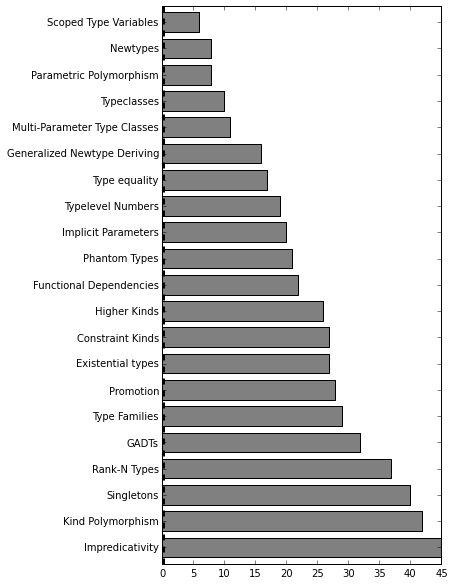
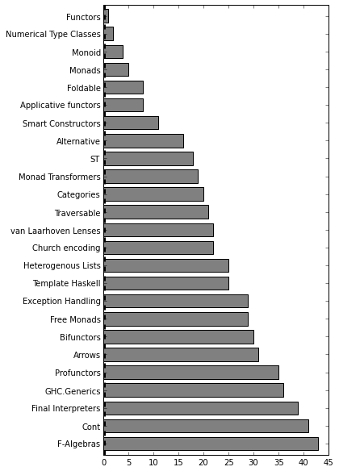

Haskell Poll Results
I put out a call for data and comments about topics that Haskell people felt were under represented. I’m sure I’ll take some flak for the informal poll and methodology, but I feel that having at least some concrete data about the Haskell zeitgeist is better than nothing.
As my wise friends have noted, baked into the poll is a hypothesis that people will give different responses based on which domain they use Haskell for ( i.e. compiler developers have different focus than web developers). This seems to be confirmed by the data, but at the same time also self-selects for people who have a narrow focus. Also given the nature of the collection, we’re only going to select people who are willing to respond and active on Haskell forums.
The total counts include all individuals, even those who gave a “None of the above” or write-in for their domain. These are some of the most bizarre results, but when these points are excluded and then factored on domain the results seem much more sensible.
Thanks again for all those who volunteered their opinions.
Domains
The first question concerned which domain of programming the questionee is involved in. This field was exclusive choice so that we could bin on it when doing statistics later. The most popular domains in order are:
- Web Development
- Compiler Design
- Pure Mathematics or CS Theory
- Data Analysis
- Numerical Computing
- Education
- Financial Modeling
The number of people involved in compiler development was somewhat surprising result to say the least. The other domains seemed to fall out fairly natural. There were also quite a few write-ins in various forms, and many comments indicating multidisciplinary fields. The write-ins were excluded from the later binning on the various factors and only included in the total count.
Skill Level
The self-rated skill level turned out to be a fairly typical distribution with a median of 5, mode of 5, and mean of 5.3. Curiously most Haskellers in the poll rated themselves below average, the mean was shifted right due to the large number of people rating themselves a 9 or 10.
Type System
The six most mentioned type systems features surprised me a bit, they were:
- Impredicative Types
- Kind Polymorphism
- Singletons
- Rank-N Types
- GADTs
- Type Families
Impredicative Types is a curious answer. I’m puzzled why it seems so dominant. My only guess is that it relates to it showing up so frequently in GHC error reporting that many people are curious about what it means having never actually used it.
Kind Polymorphism is understandable since it’s a fairly recent addition to GHC and already there seems to a need for many poly-kinded versions of existing structures in Base.
Singletons is also a rather fruitful modern area of research in bringing some semblance of dependent types to Haskell. The singletons library has been the subject of several ICFP talks and recent meetup talks.
Rank N-Types invariably seems to always be a point of confusion in some discussions. I would indeed say that higher-ranked polymorphism is not widely understood and can be very subtle.
Type Families is also a fairly new feature in GHC, and the subject of much active exploration. Only a few months ago did GHC 7.8 get closed type families, giving us the ability to encode much more complex logic at the type level
Binned amongst the Web Development user group, the most mentioned topics are:
- Impredicative Types
- GADTs
- Type Families
Binned amongst the Compiler Design user group, the most mentioned topics are:
- Impredicative Types
- Kind Polymorphism
- Type Families
Binned amongst the Pure Mathematics or CS Theory user group, the most mentioned topics are:
- Singletons
- Kind Polymorphism
- Type Families
Binned amongst the Data Analysis user group, the most mentioned topics are:
- Kind Polymorphism
- Type Families
- Rank-N Types

Patterns
The pattern results were also somewhat surprising as well, they were:
- F-Algebras
- Cont
- GHC.Generics
- Profunctors
- Final Interpreters
- Arrows
F-Algebras is also a puzzling response, but was overwhelming the most mentioned response from the total count. There are some great articles about the relations between F-Algebras and catamorphisms, and although they are used somewhat rarely and I’m genuinely surprised about this result.
Continuation passing and CPS conversion seems to be one of those thuddingly concrete topics, that seems to confuse more than it should. Continuations do invert the way we normally think about control flow which can be confusing.
GHC.Generics are another topic which is indeed rather under represented, at the time of writing this I cannot actually think of a resource to point anyone at that explains how to use Generics beyond what the GHC manual explains. At the same time Generics are incredibly powerful and useful.
Profunctors is understandably confusing, and puzzlingly it seems to be a dependency of a large number of libraries on Hackage while the library itself has limited documentation.
Arrows is also very understanble. They seem to have been a very active area of research 10 or so years ago, leaving us with a lot of half-baked libraries around seemingly beautiful ideas that died out leaving us only with hints of the possibilities of arrows. That and ArrowSyntax extensions which are very odd and seem to be understood by shockingly few people even amongst the ghc-dev crowd.
Binned amongst the Web Development user group, the most mentioned topics are:
- van Laarhoven Lenses
- Exception Handling
- Template Haskell
Binned amongst the Compiler Design user group, the most mentioned topics are:
- Cont
- Free Monads
- Profunctors
Binned amongst the Pure Mathematics or CS Theory user group, the most mentioned topics are:
- F-Algebras
- Cont
- Profunctors
Binned amongst the Data Analysis user group, the most mentioned libraries are:
- Free Monads
- van Laarhoven Lenses
- Heterogeneous Lists
There were no write-ins for this category.
A lot of people don’t understand the difference between
mtlandtransformersand thinkmtlis the only way to do monad transformers
hsc3, the supercollider library, could really use some documentation IMO. One can rely on the supercollider docs, but that’s an extra layer of lookup, and you have to infer the meaning of arguments that don’t always correspond exactly. Seems to me sound is one area where new programmers might be interested in playing with haskell, unfortunately its not too noob friendly.

Libraries
The libraries section was admittedly a bit of a grab bag, there is no way to poll on all of Hackage so inevitably I have to chose an arbitrary sample of cross-domain library. I chose not to include web libraries since they often tend to fall under an umbrella project ( yesod, snap, happstack ) and exhibit some odd clustering behavior that makes them somewhat unique amongst other packages. The top 20 packages are listed below:
- repa - A numerical library for high performance, regular, multi-dimensional, shape polymorphic parallel arrays.
- uniplate - A generics library for traversals and rewrites.
- mmorph - Monad morphisms, a utility library for working with monad transformers.
- free - A implementation of free monads.
- lens-family - A lightweight minimalistic lens library in the van Laarhoven style.
- unbound - A binder library for capture avoiding substitution for building type checkers and interpreters.
- operational - A monadic utility library for building complex monadic control flow.
- pipes - A coroutine streaming library with strong categorical foundations.
- parsec - A parser combinator library.
- esqueleto - A SQL query embedded DSL.
- safe - A utility library providing total function variants for many Prelude partial functions.
- accelerate - A numerical library for parallel array computing with various backends.
- resourcet - Deterministic allocation and freeing of scarce resources
- fgl - Functional graph theory library.
- optparse-applicative - Command line option parsing.
- quickcheck - Property based testing framework.
- hakyll - Static website generator.
- vector - Generic computing library providing boxed and unboxed contigious memory arrays and fusion.
- llvm-general - Bindings to the LLVM code generation and compiler framework.
- diagrams - Drawing library and embedded domain language for vector graphics.
Binned amongst the Web Development user group, the most mentioned libraries are:
- pipes
- esqueleto
- mmorph
Binned amongst the Compiler Design user group, the most mentioned libraries are:
- uniplate
- graphscc
- llvm-general
Binned amongst the Pure Mathematics or CS Theory user group, the most mentioned libraries are:
- repa
- uniplate
- free
Binned amongst the Data Analysis user group, the most mentioned libraries are:
- repa
- accelerate
- lens-family
The most popular write-ins were:
- reactive
- uu-parsinglib
- lambdacube-gl
- trifecta
- machines
- recursion-schemes
Most of these results are self explanatory and reflect my intuition about Hackage as well. There are some weird anomalies though:
Repa seemingly has a large amount of tutorials and worked examples so this result has me scratching my head a little bit.
On a personal note, I’m somewhat saddened by how often llvm-general shows up given how much time I spent on, what I thought, was a very extensive tutorial on the subject.

Language Features
For language features I tried to poll on topics specific to GHC’s implementation details. The results were overwhelmingly about performance and profiling:
- Profiling Memory
- Rewrite Rules / Fusion
- Cross Compilation
- Profiling CPU
- Memory Representation
- Inlining
Binned amongst the Web Development user group, the most mentioned topics are:
- Profiling Memory
- Profiling CPU
- Laziness ( Strictness Annotations )
Binned amongst the Compiler Design user group, the most mentioned topics are:
- Cmm
- STG
- Memory Representation
Binned amongst the Pure Mathematics or CS Theory user group, the most mentioned topics are:
- Profiling Memory
- Profiling CPU
- Inlining
Binned amongst the Data Analysis user group, the most mentioned topics are:
- Profiling Memory
- Laziness ( Strictness Annotations )
- Inlining
The most mentioned write-ins were:
- SIMD
- Compiler Passes
- Compiler Plugins

Along the lines of performance profiling, I think GHC’s execution model and heap representation are discussed less frequently than they deserve.
Quality overviews on term rewriting and optimization steps on Haskell Core(System FC) in the GHC. I can tell it’s out there, but information seems fragmented and a good quality article on the wiki would be very appreciated.
Language interop, the C FFI is just the start of the story. How to play nice with the GC with foreign data? How to play nice with Haskell data from the other side?
Critical Comments
The “reactive” library seems to be very useful, but it is still very abstract. It would be nice to see more focus on this, providing more examples for how it can be used.
In my work, arrows and categories are most useful in constructing lenses. I think lenses are actually a pretty simple idea but the most popular lens library is bloated and defines a multitude of esoteric infix operators.
code that depends on edward kmett’s libraries makes haskell harder than it has to be, they need more docs + examples if haskell is going to practical and accessible
There doesn’t seem to be any areas in any of the categories above which wouldn’t benefit from more documentation. Almost all areas suffer from a lack of explained examples. The more I use almost any library, the more it seems to be lacking in good extensive documentation and examples.
Conventions in web API client design and trade offs fr different choices. E.g. Typeclasses, free monads, etc. for example, suppose you want to make a web client gnostic of te underlying HTTP client, what’s the best approach? Most people use typeclasses for this, but Haskell has many tools to tackle this problem.
Positive Comments
I think the biggest use to myself and the community would be more articles like Gabriel Gonzalez has done that show how to use important Haskell constructs, like monoids or free monads, to structure help program design.
There’s some exciting developments in this area–see the Haste presentation by StrageLoop and others). And the efforts to bring React bindings to Haskell. All of the pieces exists in some form currently, but we have a ways to go before they mature.
Takeaway
This is of course an unscientific poll and please don’t read too much into the data. The goal was to generate a rough list of the topics that people are interested in and feel need some more context.
On that note, if you are looking for topics for you next blog to post to maximize the coverage of misunderstood topics and advance the state of Haskell knowledge, consider one of the following subjects:
- Types: Impredicative Types
- Types: Kind Polymorphism
- Types: Singletons
- Language: Profiling Memory
- Language: Rewrite Rules / Fusion
- Language: Cross Compilation
- Library: repa
- Library: uniplate
- Library: mmorph
- Library: free
- Library: lens-family
- Pattern: F-Algebras
- Pattern: Cont Monad
- Pattern: GHC.Generics